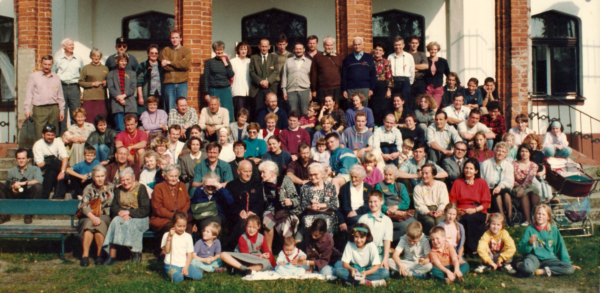

VIII Zjazd: Sorkwity

Wspomnienia
Sorkwity: - pojawili się Konopki, - tańczyliśmy do walców, wciąż i wciąż walce.
Jak na wielu zjazdach w Sorkwitach także dopisała nam pogoda. Byli tacy co kąpali się w jeziorze, skacząc z pomostu, inni siedząc w łódkach zakotwiczonych do brzegu integrowali się. Wśród nich była Matylda Janiszewska która „utopiła” swoje okulary. Wyłowił utracone patrzałki bodajże tata stratnej dziewczyny – wujek Maciej. Ponadto, na zjeździe pojawiła się dość licznie reprezentowana rodzina Konopków, której samochody w noc balową o dziwo zmieniły miejsce parkowania – zostały przestawione przez kawalerkę.
Pamiętam Różę Janiszewską, która w Sorkwitach utopiła swoje okulary w jeziorze. A wszystkie matki, ciotki mówiły że mamy uważać bo to się źle skończy. Na tym zjeździe przy turnieju piłki nożnej M. Szczepaniak przestawiał bramkę, której bronił a była zrobiona z koszy na śmieci. Najprzyjemniejsze jest to, jak z moim pokoleniem, a raczej częścią mego pokolenia mamy tradycję, że sobotni bal kończymy wspólnym oglądaniem wschodu słońca. Ciekawe czy kolejne pokolenia będą miały swoje pomysły na tradycje …
Moje pierwsze wspomnienie. To było w Sorkwitach 1993. Przyjechałam z moją mamą, Jadwigą Domańską. Moja mama znała całą rodzinę, ja – nie. Pewna starsza dama, do której dosiadłyśmy się w kuluarach, uświadomiła mnie, że wszyscy powyżej 80 r. życia to ciocie i wujkowie, a do reszty można mówić per ty. A więc owa ciocia zwróciła się do mnie z opowiadaniem o moim dziadku, Stanisławie. Powiedziała „Dziecko, jak twój dziadek pięknie wyglądał w tym polskim mundurze, kiedy szedł na wojnę 1920 roku!” Ten obraz zawsze mi towarzyszy, kiedy mówię swoim uczniom o tej wojnie i kiedy mogę powiedzieć, że walczył w niej też mój dziadek.
Pierwszy zjazd, który pamiętam to był zjazd w Sorkwitach organizowany przez mojego dziadka Jana Kraińskiego. Pamiętam zaciekły mecz piłki nożnej gdzie bramkami były metalowe kubły na śmieci. W trakcie balu serwowana była dziczyzna – wjechał na stół dzik (albo inne zwierze) w całości co było dla mnie trochę straszne. Najbardziej zapadły mi w pamięci fajerwerki odpalone na trawniku przez jakiegoś wuja.
Zjazd organizowany przez Jana i Elżbietę Kraińskich z małą pomocą dzieci. Wprowadzone zostały innowacje, między innymi podział Rodziny na 3 główne gałęzie: czerwoną, zieloną i żółtą. Początkowo były to wstążeczki, identyfikatory imienne były później (chyba po 4 latach). Zdjęcie Rodziny zostało zrobione pod groźbą „nie wydania” obiadu, czyli przed obiadem, gdy przyszli wszyscy zgłodniali :) A do zdjęcia została dodana opracowana przeźroczysta nakładka z numerami i oznaczeniem numeru imieniem i nazwiskiem osoby. Początek uroczystej kolacji był uświetniony polonezem prowadzonym przez Jana Kraińskiego, organizatora.
Niezapomniane wrażenie wywarła na mnie wizyta na zjeździe dalszych krewnych. Uczestnicy zjazdu w strojach nieformalnych, korzystając z pięknej pogody w mniejszych lub większych grupkach integrowali się na trawniku. Wtem przed pałac zajechała „kibitka” z której wysypała się liczna delegacja rodziny Konopków, każdy w garniturze, każdy wychodząc poprawiał krawat. Jakiż to był kontrast z pojazdem którym przybyli. Dalej nastąpiło przywitanie, przybyli idąc gęsiego po kolei witali się z już obecnymi podając rękę i przedstawiając się, rozbrzmiewało więc Konopka jestem, Konopka jestem, Konopka jestem, …